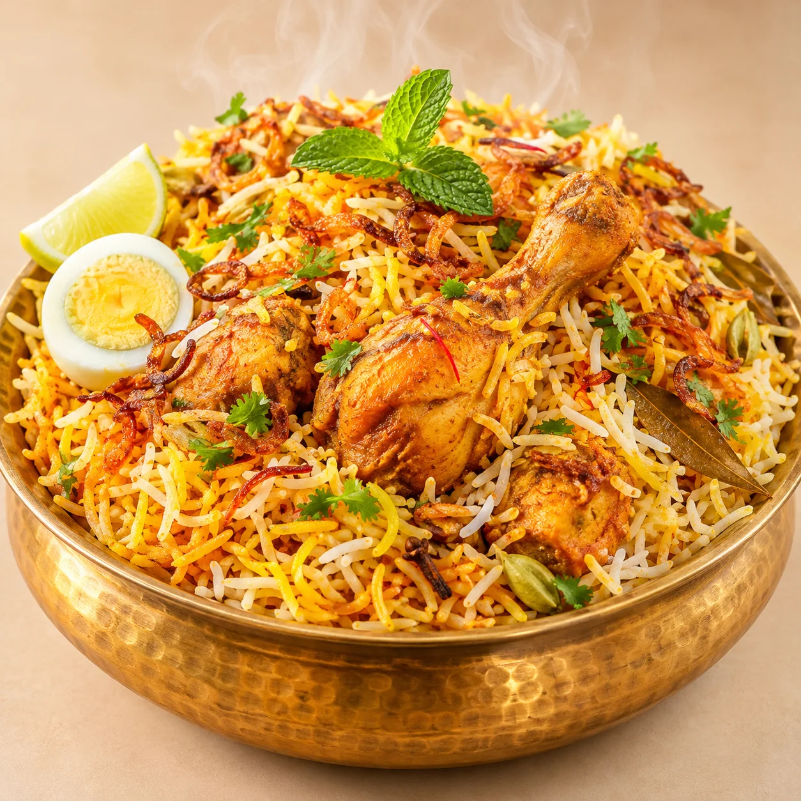

Hyderabadi Chicken Biryani
Non-Veg · Layered dum biryani with marinated chicken, saffron and fried onions
Your photo goes here
(save it as images/chicken-biryani.jpg)
(save it as images/chicken-biryani.jpg)

Ingredients checklist
0 of 0 ingredients ready
You have everything. Time to cook!
Instructions
- Make the birista: heat the oil in a pan and fry the sliced onions on medium heat for 15 to 20 minutes, stirring often, until deep golden and crisp. Drain and spread them out so they crisp up. Keep the oil.
- Marinate the chicken with the yogurt, ginger-garlic paste, chilli powder, turmeric, garam masala, green chillies, half the mint and coriander, lemon juice, half of the birista (crushed by hand), 3 tbsp of the reserved onion oil and salt. Cover and refrigerate for at least 2 hours, or overnight.
- Bring the water to a boil with the whole spices, shahi jeera and a good amount of salt (it should taste salty like the sea).
- Add the soaked rice and boil for 5 to 6 minutes until it is about 70% cooked: a grain should break easily when pressed but still be firm in the centre. Drain at once.
- Spread the marinated chicken evenly in the bottom of a heavy-bottomed pot. Cover with half of the rice.
- Sprinkle on half of the remaining birista, mint and coriander. Add the rest of the rice, then top with the remaining birista, mint and coriander, the saffron milk, the ghee and the kewra water.
- Seal the pot with the dough and a tight lid. Cook on high heat for 3 to 4 minutes until steam starts to escape, then reduce to the lowest heat (dum) and cook for 35 to 40 minutes. A flat pan under the pot stops the bottom from burning.
- Switch off the heat and rest for 10 minutes before opening. Check that the chicken is fully cooked (the juices run clear and the thickest piece reaches 75°C / 165°F).
- Mix gently from the bottom so the layers combine, and serve hot with raita and mirchi ka salan.